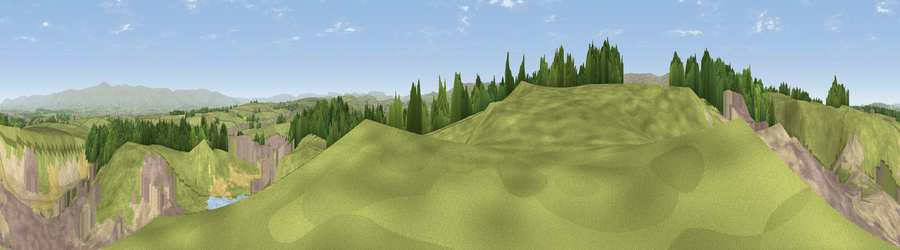

Viewpoint near Rosgill
#6242 in England · top 26% of its area beats it · near Rosgill · access?Where it is
The exact computed spot (NY 54550 18362). Click the marker for map links.
Public access: no public right of way or access land is recorded at this exact spot — it may be on private land. Computed from Natural England's CRoW access layer and OpenStreetMap rights of way — not the legal definitive map. Always verify locally.
The view, rendered

A 360° render of this exact spot computed from the terrain model, tree cover and land cover — summer colours, afternoon light, calibrated against photographs of famous viewpoints. Real trees, hedges and buildings will differ in detail.
The panorama
Grey silhouette: terrain skyline in each direction (720 bearings, Earth curvature and refraction included). Dashed green: skyline with trees (+15 m) and buildings (+8 m) as obstacles. Blue strip: how far the ground is visible on each bearing.
Where the view opens
Wedge length = distance to the farthest visible ground on that bearing (vegetation-aware). Rings at 10, 25 and 50 km.
What fills the view
67% grassland · 10% built-up · 10% bare ground · 5% water · 5% woodland · 3% cropland
Angular shares of the visible panorama (visual magnitude), not map area. Landscape diversity 0.49 (0–1 Shannon).
Key numbers
More beautiful places nearby
The staircase of upgrades: each row has a higher view potential than everything closer. Driving times are estimates from straight-line distance, calibrated against real road routing — check an actual route before setting out.
| Place | Direction | Drive | Score |
|---|---|---|---|
| Viewpoint near Bampton | SW · 5 km | ~11 min | 72.1 |
| Hugh's Laithes Pike | SW · 5 km | ~12 min | 76.8 |
| Bampton Fell | WSW · 6 km | ~13 min | 77.7 |
| Viewpoint near Bampton | WSW · 8 km | ~16 min | 77.8 |
| Viewpoint near Bampton | WSW · 8 km | ~17 min | 80.4 |
| Viewpoint near Watermillock | WNW · 9 km | ~17 min | 82.6 |
| Viewpoint near Watermillock | WNW · 9 km | ~18 min | 83.5 |
| Viewpoint near Legburthwaite | W · 21 km | ~35 min | 83.8 |
54.55845, -2.70431 · source: screening · position refined by local search. Computed location — check access rights before visiting.